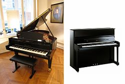
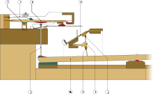

The piano is an acoustic, stringed musical instrument, in which the strings
are struck by hammers. It is played using a keyboard, which is a row of keys
(small levers) that the performer presses down or strikes with the fingers and
thumbs of both hands to cause the hammers to strike the strings.
Invented in
about 1700 (the exact year is uncertain), the piano is widely employed in
classical, jazz, traditional and popular music for solo and ensemble
performances, accompaniment, and for composing, songwriting and rehearsals.
Although the piano is very heavy and thus not portable and is expensive (in
comparison with other widely used accompaniment instruments, such as the
acoustic guitar), its musical versatility (i.e., its wide pitch range, ability
to play chords with up to 10 notes, louder or softer notes and two or more
independent musical lines at the same time), the large number of musicians and
amateurs trained in playing it, and its wide availability in performance venues,
schools and rehearsal spaces have made it one of the Western world's most
familiar musical instruments.
An acoustic piano usually has a protective wooden case surrounding the
soundboard and metal strings, which are strung under great tension on a heavy
metal frame.
Most modern pianos have a row of 88 black and white keys (52 white
keys for the notes of the C Major scale (the notes C, D, E, F, G, A and B) and
36 shorter black keys, which are raised above the white keys, and set further
back on the keyboard. This means that the piano can play 88 different pitches
(or "notes"), going from the deepest bass range to the highest treble range. The
black keys are for the "accidental" notes (or "black notes"), which are the
sharp and flat notes, which are F#, G#, Bb, C#, and Eb, which are needed to play
in all twelve keys. There are usually multiple strings per key.
The strings can
be sounded when the keys are pressed or struck, and silenced by a damper when
the hands are lifted off the keyboard. The notes can be sustained, even when the
keys are released, by the use of pedals at the base of the instrument. The
sustain pedal enables pianists to play musical passages that would otherwise be
impossible, such as sounding a 10-note chord in the lower register and then,
while this chord is being continued with the sustain pedal, shifting both hands
to the treble range to play a melody and arpeggios over top of this sustained
chord.
Unlike two of the major keyboard instruments that were widely used before
the piano, the pipe organ and the harpsichord, the weight or force with which a
performer presses or strikes the keys on a piano changes the dynamics and tone
of the instrument's sound.

Pressing one or more keys on the piano's keyboard causes a padded hammer
(typically padded with firm felt) to strike the strings. The hammer rebounds
from the strings, and the strings continue to vibrate at their resonant
frequency.
These vibrations are transmitted through a bridge to a soundboard
that amplifies by more efficiently coupling the acoustic energy to the air. When
the key is released, a damper stops the strings' vibration, ending the sound.
Although an acoustic piano has strings, it is usually classified as a percussion
instrument rather than as a stringed instrument, because the strings are struck
rather than plucked (as with a harpsichord or spinet); in the Hornbostel-Sachs
system of instrument classification, pianos are considered chordophones.
With
technological advances, amplified electric pianos (1929), electronic pianos
(1970s), and digital pianos (1980s) have also been developed. The electric piano
became a popular instrument in the 1960s and 1970s genres of jazz fusion, funk
music and rock music.
The word piano is a shortened form of pianoforte, the Italian term for the early
1700s versions of the instrument, which in turn derives from gravicembalo col
piano e forte and fortepiano.
The Italian musical terms piano and forte indicate
"soft" and "loud" respectively, in this context referring to the variations in
volume produced in response to a pianist's touch or pressure on the keys: the
greater the velocity of a key press, the greater the force of the hammer hitting
the strings, and the louder the sound of the note produced and the stronger the
attack.
The first fortepianos in the 1700s had a quieter sound and less dynamic
range. Over the 1800s, influenced by the musical trends of the Romantic music
era, many innovations were made to make grand pianos louder, and give them a
stronger and more powerful tone, such as using massive cast-iron frames and
adding extra aliquot stringing.
Modern piano:
In the period from about 1790 to 1860, the Mozart-era piano underwent tremendous
changes that led to the modern form of the instrument.
This revolution was in
response to a preference by composers and pianists for a more powerful,
sustained piano sound, and made possible by the ongoing Industrial Revolution
with resources such as high-quality piano wire for strings, and precision
casting for the production of massive iron frames that could withstand the
tremendous tension of the strings.
Over time, the tonal range of the piano was
also increased from the five octaves of Mozart's day to the seven octave (or
more) range found on modern pianos.

Early technological progress in the late 1700s owed much to the firm of
Broadwood. John Broadwood joined with another Scot, Robert Stodart, and a
Dutchman, Americus Backers, to design a piano in the harpsichord case—the origin
of the "grand". They achieved this in about 1777.
They quickly gained a
reputation for the splendour and powerful tone of their instruments, with
Broadwood constructing pianos that were progressively larger, louder, and more
robustly constructed.
They sent pianos to both Joseph Haydn and Ludwig van
Beethoven, and were the first firm to build pianos with a range of more than
five octaves: five octaves and a fifth (interval) during the 1790s, six octaves
by 1810 (Beethoven used the extra notes in his later works), and seven octaves
by 1820.
The Viennese makers similarly followed these trends; however the two
schools used different piano actions: Broadwoods used a more robust action,
whereas Viennese instruments were more sensitive.
By the 1820s, the center of piano innovation had shifted to Paris, where the
Pleyel firm manufactured pianos used by Frédéric Chopin and the Érard firm
manufactured those used by Franz Liszt.
In 1821, Sébastien Érard invented the
double escapement action, which incorporated a repetition lever (also called the
balancier) that permitted repeating a note even if the key had not yet risen to
its maximum vertical position.
This facilitated rapid playing of repeated notes,
a musical device exploited by Liszt. When the invention became public, as
revised by Henri Herz, the double escapement action gradually became standard in
grand pianos, and is still incorporated into all grand pianos currently produced
in the 2000s. Other improvements of the mechanism included the use of firm felt
hammer coverings instead of layered leather or cotton.
Felt, which was first
introduced by Jean-Henri Pape in 1826, was a more consistent material,
permitting wider dynamic ranges as hammer weights and string tension increased.
The sostenuto pedal (see below), invented in 1844 by Jean-Louis Boisselot and
copied by the Steinway firm in 1874, allowed a wider range of effects, such as
playing a 10 note chord in the bass range, sustaining it with the pedal, and
then moving both hands over to the treble range to play a two-hand melody or
sequence of arpeggios.
One innovation that helped create the powerful sound of the modern piano was the
use of a massive, strong, cast iron frame. Also called the "plate", the iron
frame sits atop the soundboard, and serves as the primary bulwark against the
force of string tension that can exceed 20 tons in a modern grand.
The single
piece cast iron frame was patented in 1825 in Boston by Alpheus Babcock,
combining the metal hitch pin plate (1821, claimed by Broadwood on behalf of
Samuel Hervé) and resisting bars (Thom and Allen, 1820, but also claimed by
Broadwood and Érard).
Babcock later worked for the Chickering & Mackays firm who
patented the first full iron frame for grand pianos in 1843. Composite forged
metal frames were preferred by many European makers until the American system
was fully adopted by the early 20th century.
The increased structural integrity
of the iron frame allowed the use of thicker, tenser, and more numerous strings.
In 1834, the Webster & Horsfal firm of Birmingham brought out a form of piano
wire made from cast steel; according to Dolge it was "so superior to the iron
wire that the English firm soon had a monopoly.
"But a better steel wire was soon
created in 1840 by the Viennese firm of Martin Miller, and a period of
innovation and intense competition ensued, with rival brands of piano wire being
tested against one another at international competitions, leading ultimately to
the modern form of piano wire.
Other important advances included changes to the way the piano is strung, such
as the use of a "choir" of three strings rather than two for all but the lowest
notes, and the implementation of an over-strung scale, in which the strings are
placed in two separate planes, each with its own bridge height.
(This is also
called cross-stringing. Whereas earlier instruments' bass strings were a mere
continuation of a single string plane, over-stringing placed the bass bridge
behind and to the treble side of the tenor bridge area.
This crossed the
strings, with the bass strings in the higher plane.) This permitted a much
narrower cabinet at the "nose" end of the piano, and optimized the transition
from unwound tenor strings to the iron or copper-wrapped bass strings.
Over-stringing was invented by Pape during the 1820s, and first patented for use
in grand pianos in the United States by Henry Steinway, Jr. in 1859
Some piano makers developed schemes to enhance the tone of each note. Julius
Blüthner developed Aliquot stringing in 1893 as well as Pascal Taskin (1788),and
Collard & Collard (1821).
These systems were used to strengthen the tone of the
highest register of notes on the piano, which up till this time were viewed as
being too weak-sounding. Each used more distinctly ringing, undamped vibrations
of sympathetically vibrating strings to add to the tone, except the Blüthner
Aliquot stringing, which uses an additional fourth string in the upper two
treble sections.
While the hitchpins of these separately suspended Aliquot
strings are raised slightly above the level of the usual tri-choir strings, they
are not struck by the hammers but rather are damped by attachments of the usual
dampers. Eager to copy these effects, Theodore Steinway invented duplex scaling,
which used short lengths of non-speaking wire bridged by the "aliquot"
throughout much of upper the range of the piano, always in locations that caused
them to vibrate sympathetically in conformity with their respective
overtones—typically in doubled octaves and twelfths.
The mechanical action
structure of the upright piano was invented in London, England in 1826 by Robert
Wornum, and upright models became the most popular model. Upright pianos took
less space than a grand piano, and as such they were a better size for use in
private homes for domestic music-making and practice.